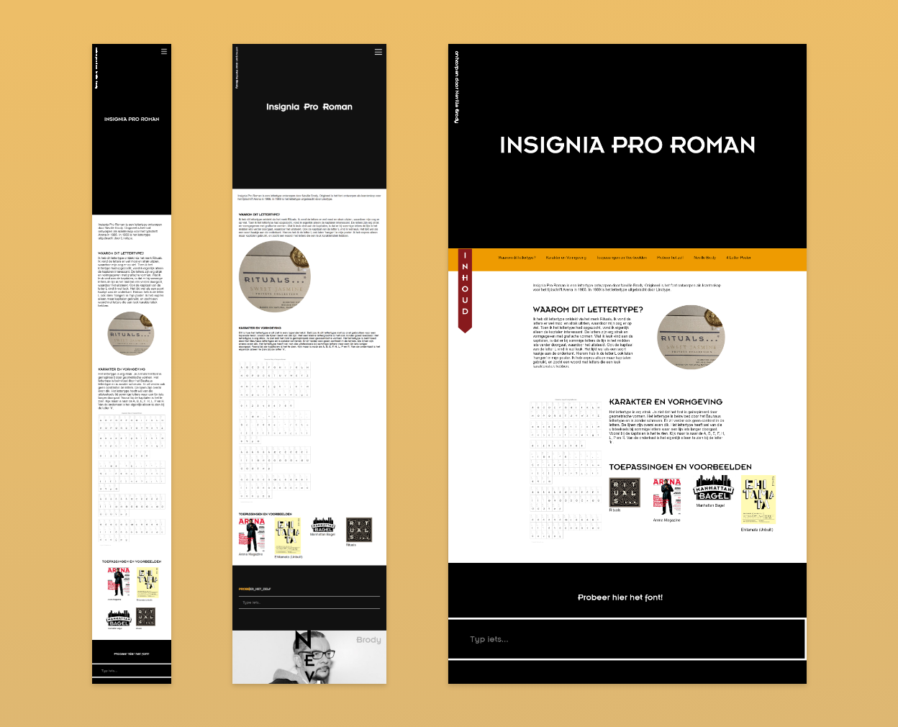

Periode
September/oktober 2023
Skills
- ● HTML
- ● CSS
- ● Javascript
- ● Responsiveness
- ● Animaties
Opdracht & beschrijving
Voor het vak Typografie van de minor Visual Interface Design, heb ik de opdracht gekregen om een responsive website te ontwerpen en te coderen over een zelfgekozen font. Het font dat ik heb gekozen is Insignia Pro Roman, ontworpen door Neville Brody. Ik heb dit lettertype ontdekt via het merk Rituals. Ik vond de letters er wel mooi en strak uitzien, waardoor mijn oog er op viel. De website is gemaakt met HTML, CSS en Javascript.
Responsiveness
De website is volledig responsive en te gebruiken op elk scherm.
Animaties
Animaties maken de website levendiger. Op de home pagina heb ik de naam van het font geanimeerd om de aandacht van de gebruikers te trekken. Verder heb ik nog wat animaties toegevoegd om het font weer te geven.
Code
De code van de website bestaat bestaat uit 172 lines HTML, 965 lines CSS en 10 lines Javascript. Dit is de eerste website die ik volledig responsive heb gecodeerd!
Poster
Ook had ik de opdracht gekregen om op A2 formaat een ontwerp te maken van een typografische poster waar een 4-letter woord op staat van het gekozen font. Ik had gekozen voor het woord ‘vlak’. Wat ik leuk vind aan mijn poster, is dat het op zo een manier is ontworpen dat je het op meerdere manieren kan bekijken. Als je hem ondersteboven houdt of spiegelt, is het woord nog steeds leesbaar.